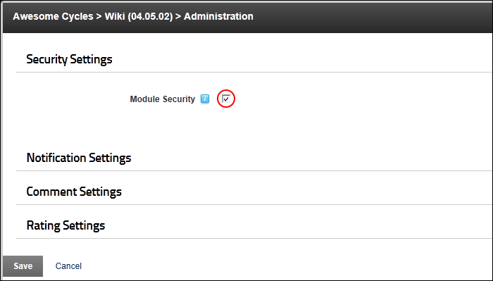

Configuring Wiki Editing Permissions
How to configure editing permissions for the Wiki module. You can use either the standard module permissions as set on the Module Settings page, or create a unique set of editing permissions. Note: Only Administrators and SuperUsers can access manage configuration.
- Select
 Wiki Configuration from the Wiki module actions menu.
Wiki Configuration from the Wiki module actions menu.
- Expand the Security Settings section.
- At Module Security, select from these options:
- Mark
 the check box to use the edit permissions set for this module on the Module Settings page. See "Setting Module Permissions"
the check box to use the edit permissions set for this module on the Module Settings page. See "Setting Module Permissions"

- Unmark
 the check box to create custom permissions. This will expose the "Wiki Edit Roles" field where you can set the custom permissions. For example, in the below image editing rights have been assigned to all users in the Staff role.
the check box to create custom permissions. This will expose the "Wiki Edit Roles" field where you can set the custom permissions. For example, in the below image editing rights have been assigned to all users in the Staff role.
- To assign a role as an editor, click on the role name in the Available list and click the Add selected Available Item to Assigned> link.
- To remove a role as an editor, click on the role name in the Assigned list and click the Remove selected Assigned Item< link.
- To assign all roles as editors, click the Add All Available Items to Assigned>> link.
- To remove all roles as editors, click the Remove All Assigned Items>> link.

- Click the Save button.